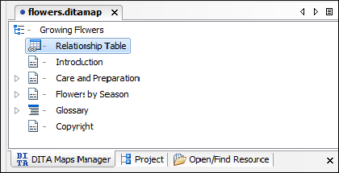

Linking with Relationship Tables in DITA
A relationship table is used to express relationships between topics outside of the topics themselves. The DITA publishing scripts can then create links between related topics when the content is published.
The reason for using a relationship table is to help make topics easier to reuse. If a topic links directly to another topic, this creates a dependency between the topics. If one topic is reused in a publication where the other is not used, the link is broken. By defining relationships between topics in a relationship table, you avoid creating this dependency.
To create an appropriate set of links between topics in multiple publications, you can create a separate relationship table for each publication. If you are creating multiple publications by applying profiling conditions to a single map, you can also profile your relationship table.
To create a relationship table, follow these steps:
-
If the map is currently open in the DITA Maps
Manager, double-click the map icon (
 ) to open the map in
Author mode. If it opens in Text mode,
click Author at the bottom left to switch to
Author mode.
) to open the map in
Author mode. If it opens in Text mode,
click Author at the bottom left to switch to
Author mode.
-
Move the insertion point inside the map root element (usually
<map>, but it might be<bookmap>, or another specialization of the<map>element). The easiest way to do this is to click below the title of the map in the editor and then press the up arrow once. Confirm that you are inside the map root element by checking the breadcrumbs at the top left of the editor window. You should only see the name of the map root element. -
Select the
 Insert
Relationship Table action on the toolbar or from the Relationship
Table submenu of the contextual menu.
The Insert Relationship Table dialog box is displayed.
Insert
Relationship Table action on the toolbar or from the Relationship
Table submenu of the contextual menu.
The Insert Relationship Table dialog box is displayed. - Set the number of rows, the number of columns, a table title (optional), and select whether or not you want a table header. Click Insert.
-
Enter the type of the topics in the header of each column.
The header of the table (the
<relheader>element) already contains a<relcolspec>element for each table column. You should set the value of the@typeattribute of each<relcolspec>element to a value such as concept, task, or reference. When you click in the header cell of a column (that is a<relcolspec>element), you can see all the attributes of that<relcolspec>element, including the@typeattribute in the Attributes view. You can edit the attribute type in this view. -
To insert a topic reference in a cell, place the cursor in a table cell and select
 Insert
Reference from the contextual menu or the DITA
Map toolbar.
Insert
Reference from the contextual menu or the DITA
Map toolbar.
-
To add a new row to the table or remove an existing row use
 Insert Relationship
Row/
Insert Relationship
Row/ Delete Relationship Row from the contextual menu or the DITA
Map toolbar.
Delete Relationship Row from the contextual menu or the DITA
Map toolbar.
-
To add a new column to the table or remove an existing column, use
 Insert Relationship
Column/
Insert Relationship
Column/ Delete Relationship Column contextual menu or the
DITA Map toolbar. If you double-click the relationship table (or
select it and press Enter, or choose
Open from the contextual menu) the DITA map is
opened in the editor with the cursor positioned inside the corresponding relationship
table.
Delete Relationship Column contextual menu or the
DITA Map toolbar. If you double-click the relationship table (or
select it and press Enter, or choose
Open from the contextual menu) the DITA map is
opened in the editor with the cursor positioned inside the corresponding relationship
table.
-
To add topic references to your relationship table, drag and drop topics from the DITA Maps
Manager or the Project view into the
appropriate cell in the relationship table.
See the DITA documentation for a full explanation of the relationship table format and its options. Note that you can change all the selections that you make here later by using the actions on the toolbar (or in the Relationship Table submenu of the contextual menu) or by editing the underlying XML in Text mode.
-
Save the DITA map.
Relationship tables are also displayed in the DITA Maps Manager view, along with the other elements in its DITA map.
Figure 1. Relationship Table You can open the DITA map to edit the relationship table by doing one of the following:- Double-click the appropriate relationship table in the DITA Maps Manager.
- Select the relationship table in the DITA Maps Manager and press Enter.
- Select Open from the contextual menu of the relationship table in the DITA Maps Manager.